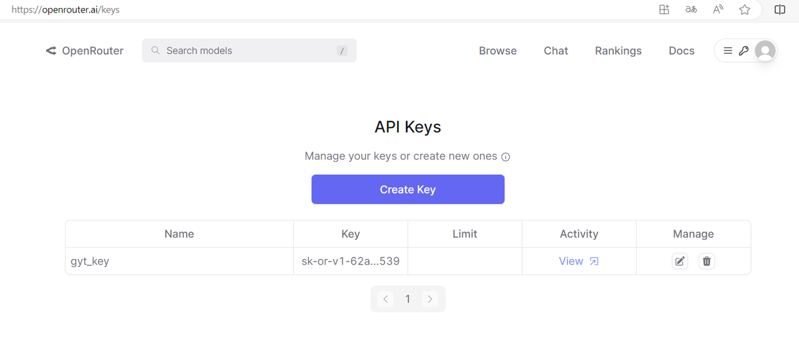
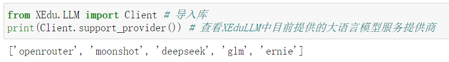

快速体验XEduLLM
XEduLLM是什么？
XEduLLM是一个大语言模型工具库，为开发者提供了一种简便的方式来与大语言模型进行交互和集成。该工具库围绕特定的大语言模型API构建，使得开发者可以在自己的应用程序中轻松地利用这些模型的强大功能。
XEduLLM的Client模块利用几行代码就可以通过API调用各种优秀的大语言模型。通过编程方式发送请求到模型所在的服务器，远程服务器会处理请求，并返回响应，实现与大语言模型交流的功能。
XEduLLM的安装和使用
安装方法
当前需安装本地whl包，未来会上pip源（pip install -U xxx）
库文件源代码可以从PyPi下载，选择tar.gz格式下载，可用常见解压软件查看源码。
发送第一个API请求
XEduLLM提供了通用接口访问工具Client，使用这个工具我们可以几行代码通过API调用各种优秀的大语言模型，发送请求，获取响应。API请求发送的目标可以是某个服务器地址也可以是服务商。
下面以向openrouter服务商发送请求为例：
首先，进入openrouter网页（https://openrouter.ai），创建一个openrouter帐户或登录。点击右上角个人头像-Keys-Create Key，命名密钥并获取密钥。
确保将密钥保存在安全的地方，不要随意与他人共享。

发送第一个API请求，参考代码如下：（直接复制代码运行会报错，需要更换自己的密钥）
# 步骤1：安装并导入库
from XEdu.LLM import Client
# 步骤2：创建客户端实例，这里用到的密钥需要自己申请
chatbot = Client(provider='openrouter',
api_key='sk-or-v1-6d7672a58c3c83……8241c0f30a3b1c3')
# 步骤3：输入请求，执行推理并得到结果
res = chatbot.inference('我是一名初中生，请用通俗易懂的语言介绍什么是大语言模型')
# 步骤4：结果输出
print(res)
输出结果如下：
大语言模型，简单来说，是一种使用人造智能技术（AI，Artificial Intelligence）和大量数据训练，培养出掌握语言规则和常识的计算机程序。其目的是帮助您在需要的地方生成文本信息，比如回答问题、写文章等。这个程序可以理解，分析和生成比较复杂的文字，像人一样地理解语境和上下文，并有些程序甚至可以自动调整语言风格来适应不同的场景。大语言模型是AI技术中重要的一部分，随着技术的发展不断进步，它被广泛应用在各种领域。希望这能帮助你更好地理解大语言模型！
PS: 由于大语言模型是模拟人类语言能力，因此它的用途可以很广，但同时也需要注意它的输出可能会有一定的限制和错误，因为它们是通过计算机程序生成的。
除了openrouter服务商，XEduLLM还提供了多种大语言模型服务提供商。当我们安装好XEduLLM并导入库后，你就可以使用Client.support_provider()语句查看目前提供的大语言模型服务提供商。看看哪一个是你想要的，然后选择它！查看XEduLLM中目前提供的大语言模型服务提供商代码如下：
from XEdu.LLM import Client # 导入库
print(Client.support_provider()) # 查看XEduLLM中目前提供的大语言模型服务提供商
输出结果：
['openrouter', 'moonshot', 'deepseek', 'glm', 'ernie']

获取大语言模型API密钥的流程通常包括在各平台网页上进行用户注册，注册完成后获取相应的算力资源，详细步骤请参考API与密钥获取。
体验XEduLLM的更多功能
体验XEduLLM的最快速方式是通过OpenInnoLab平台。
OpenInnoLab平台为上海人工智能实验室推出的青少年AI学习平台，满足青少年的AI学习和创作需求，支持在线编程。在“项目”中查看更多，查找“XEduLLM”即可找到所有XEduLLM相关的体验项目。
XEduLLM实例代码合集：敬请期待……
（用Chrome浏览器打开效果最佳）